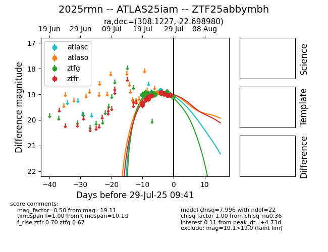

Target 2025rmn at 2025-07-29 09:41, see:
FINK: fink-portal.org/2025rmn
Lasair: lasair-ztf.lsst.ac.uk/objects/2025rmn
ALeRCE: alerce.online/object/2025rmn
TNS: wis-tns.org/object/2025rmn
YSE: ziggy.ucolick.org/yse/transient_detail/2025rmn
alt names
ZTF25abbymbh (ztf,fink)
2025rmn (tns,yse)
ATLAS25iam (atlas)
coordinates:
equatorial (ra, dec) = (308.1227,-22.69898)
galactic (l, b) = (21.8173,-31.76028)
photometry
last atlasc=18.85, atlaso=19.01, ztfg=19.11, ztfr=19.04
2 atlasc, 4 atlaso, 10 ztfg, 11 ztfr detections
